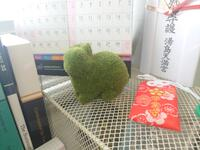

|  | Kenta Tsukuura
Current affiliation: Department of Fisheries Distribution and Management, National Fisheries University. Research Interests: Forcing, large cardinals, singular cardinals, and combinatorics. I supported by JSPS KAKENHI Grant Number 24K16959, entitled by "Study of anti-compactness of saturated ideals" from 2024-4. |
Publications: